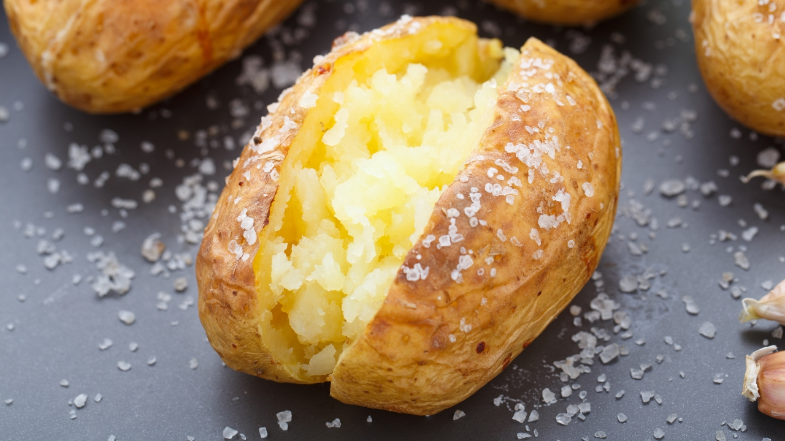

The Royal Jacket Potato

Description
In the storied halls of British comfort food, the jacket potato stands tall and proud. But today, we're not just baking a potato; we're crafting a culinary crown jewel. Picture this: a spud so splendid, it could hold court at Buckingham Palace. We've pared back the ingredients to the essentials, allowing the true potato royalty to shine.
Ingredients
- 1 large, impeccably-grown King Edward potato, chosen for its noble stature
- A generous pat of butter, churned from the milk of cows that graze on royal pastures
- A pinch of sea salt, harvested from the waters of the King's own shores
Steps
- Preheat your oven to 220°C (200°C for fan ovens), or 425°F.
- Wash the King Edward potato with care and pierce the skin with a fork, as if bestowing knighthood upon it.
- Place the potato directly on the oven rack, letting it bask in the heat for 90 glorious minutes, or until the skin is crispy and the insides fluffier than the Queen's corgis.
- Once cooked, make a cross on top of the potato with a knife, and squeeze the sides gently to open it up.
- Place the generous pat of butter in the center, letting it melt into the fluffy potato like a royal robe.
- Finish with a regal sprinkle of sea salt, as if dusting it with jewels.
- Serve on a plate worthy of a monarch, and savor each bite of this simple yet majestic dish.
Enjoy your monarch-worthy jacket potato!